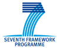

Powered by:


OSLC Adapter-Roster
"A team will always appreciate a great individual if he's willing to sacrifice for the group." Kareem Abdul-Jabbar
Team
- Name: Dr. Jose María Alvarez-Rodríguez
- Position: Visiting Professor at the Carlos III University of Madrid and member of the Knowledge Reuse Research Group.
- Phone: +30 2310 253477
- Affiliation: Department of Informatics, Avd. de la Universidad, 30, 28911, Leganés, Madrid, Spain.
- Name: Mr. Jose Fuentes
- Position: CCO at The Reuse Company Inc. and member of the Knowledge Reuse Research Group.
- Affiliation: The Reuse Company Inc., 16 Margarita Salas St. 2nd Floor LEGATEC Technology Park, 28919 Leganés - Madrid, Spain.
- Name: Prof. Dr. Juan Llorens
- Position: Professor at the Carlos III University of Madrid and Head of the Knowledge Reuse Research Group.
- Affiliation: Department of Informatics, Avd. de la Universidad, 30, 28911, Leganés, Madrid, Spain.
Knowledge Reuse Research Group
The OSLC Adapter on top of The Reuse Company Inc. tools is a joint effort in conjuction with the Carlos III University of Madrid and partially funded by the Crystal Project.
The research leading to these results has received funding from the ARTEMIS Joint Undertaking under Grant Agreement N° 332830 and from specific national programs and / or funding authorities.
